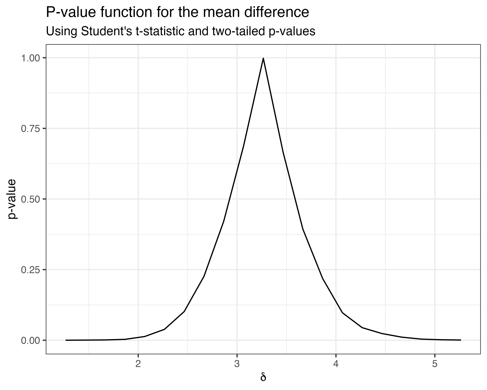
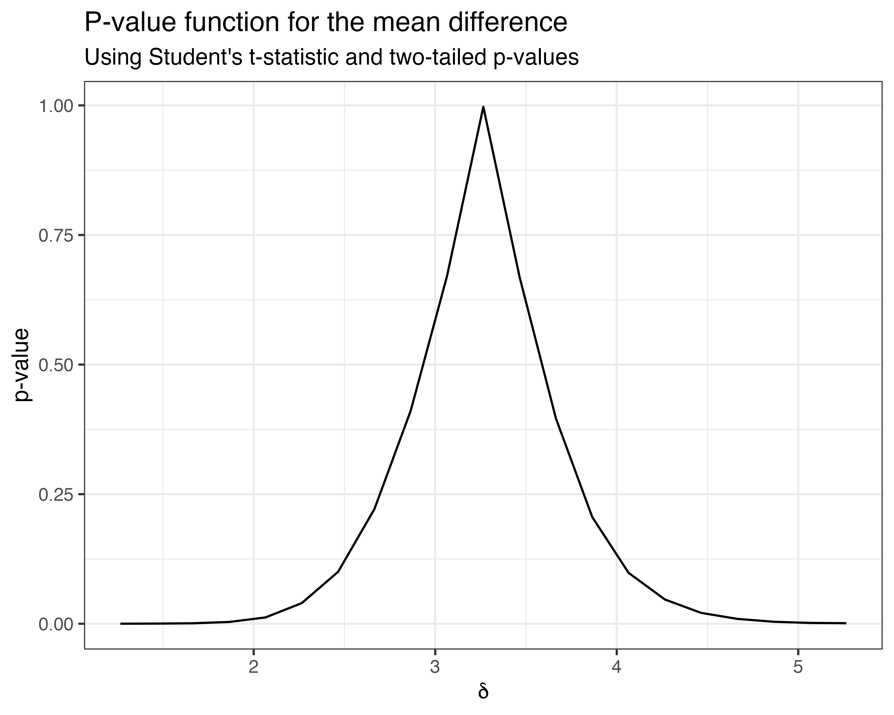
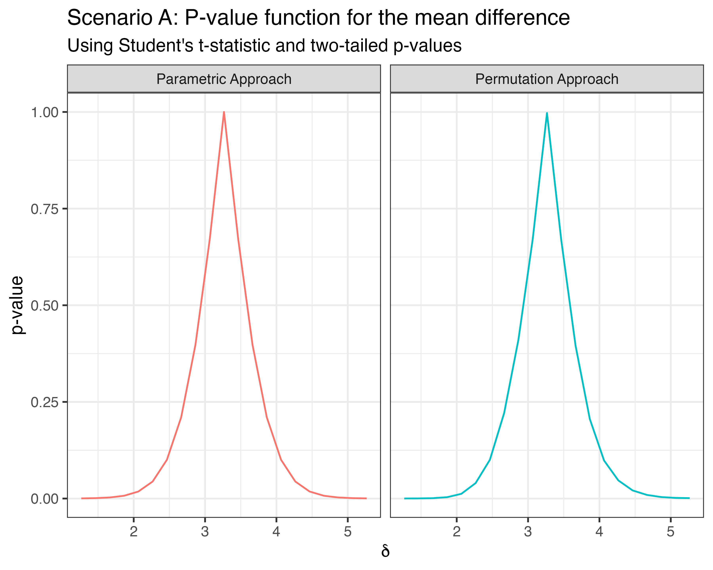

library(tidyverse)
library(flipr)
generate_grid <- function(center_value, min_value, max_value, n) {
stopifnot(center_value > min_value && center_value < max_value)
c(
seq(min_value, center_value, len = n / 2 + 1)[1:(n / 2)],
center_value,
seq(center_value, max_value, len = n / 2 + 1)[-1]
)
}The permutation framework is perfectly suited for inferential purposes as it allows one to do point estimation, confidence regions and hypothesis tests. In this article, we briefly illustrate how each of these aspects can be treated from a permutation point of view using the flipr package.
Let us work on a very classic toy example. Suppose that we are interested in studying the difference in means of two populations. We will generate:
n1 <- 10
n2 <- 10
mu1 <- 1
mu2 <- 4
sd1 <- 1
sd2 <- 1We will consider three different scenari:
Both populations follow Gaussian distributions.
Both populations follow Gamma distributions.
The first population follows a Gaussian distribution while the second population follows a Gamma distribution.
For each scenario, the goal is to make inference on the difference between the means of the two distributions. In other words, the parameter of interest is \(\delta = \mu_2 - \mu_1\).
The \(p\)-value function for the mean difference is a curve that represents the variation of the \(p\)-value of a test in which the null hypothesis is \(\delta = \delta_0\) as a function of \(\delta_0\) (Martin 2017; Fraser 2019; Infanger and Schmidt-Trucksäss 2019).
With flipr, it is easy to trace such a \(p\)-value function:
delta_pe <- mean(a2) - mean(a1)
null_spec <- function(y, parameters) {y - parameters[1]}
dfa <- tibble(
delta = generate_grid(delta_pe, delta_pe - 2, delta_pe + 2, 20),
pvalue = delta %>%
two_sample_pf(
null_specification = null_spec,
x = a1,
y = a2,
statistic = stat_t,
B = 10000,
seed = 1234,
alternative = "two_tail"
)
)
dfa %>%
ggplot(aes(delta, pvalue)) +
geom_line() +
labs(
title = "P-value function for the mean difference",
subtitle = "Using Student's t-statistic and two-tailed p-values",
x = expression(delta),
y = "p-value"
) +
theme_bw()
In the example above, we chose to compute two-tailed \(p\)-values (alternative = "two_tail") using Student’s \(t\)-statistic to perform the individual tests (statistic = stat_t) and \(10,000\) permutations sampled with replacement (B=10000). We fixed the seed for the generation of the permutations in order to use the same set of sampled permutations for each point of the \(p\)-value function.
The first two arguments of the flipr::two_sample_pf() function are the most important to properly compute the \(p\)-value function:
The first argument is parameters and should be a vector or a list of parameters that define the set of null hypotheses of which we want to evaluate the \(p\)-value from.
When one makes inference on a single parameter then parameters is a numerical vector of potential candidates for that parameter.
When one aims at making inference on multiple parameters at once, then parameters is a list. Each component of that list is in turn a numerical vector whose length matches the number of parameters under investigation.
The second argument null_specification takes a function of two arguments, namely y and parameters and defines how the second sample y should be transformed given the assumed parameters under the null hypothesis (defined in parameters) in order for samples x and y to be exchangeable under the null hypothesis. This function transforms y for a given null hypothesis. Therefore, parameters should always be a numerical vector whose length matches the number of parameters under investigation.
The whole setup might seem a bit overwhelming given that one could generate the same \(p\)-value function using Student’s parametric \(t\)-test as follows:
dfa <- dfa %>%
mutate(
pvalue_alt = delta %>%
map_dbl(~ {
t.test(
x = a2,
y = a1,
alternative = "two.sided",
mu = .x,
var.equal = TRUE
)$p.value
})
) %>%
select(
delta,
`Parametric Approach` = pvalue_alt,
`Permutation Approach` = pvalue
) %>%
pivot_longer(-delta)
dfa %>%
ggplot(aes(delta, value, color = name)) +
geom_line() +
labs(
title = "Scenario A: P-value function for the mean difference",
subtitle = "Using Student's t-statistic and two-tailed p-values",
x = expression(delta),
y = "p-value"
) +
theme_bw() +
theme(legend.position = "none") +
facet_wrap(vars(name), nrow = 1)However, keep in mind that the parametric Student’s \(t\)-test is only valid for Gaussian data or for large samples invoking the central limit theorem. When sample sizes are low and samples are not drawn from Gaussian distributions, only the permutation approach is valid. When both samples come from non-Gaussian data (here Gamma-distributed samples) and sample sizes are low (here \(10\) for each sample), we get the following \(p\)-value functions (cutting below \(0.001\) since the usual range of useful \(p\)-values is from \(0.01\) and above):
B <- 10000
deltb_pe <- mean(b2) - mean(b1)
dfb <- tibble(
delta = generate_grid(deltb_pe, deltb_pe - 2, deltb_pe + 2, 20),
pvalue = delta %>%
two_sample_pf(
null_specification = null_spec,
x = b1,
y = b2,
statistic = stat_t,
B = B,
seed = 1234,
alternative = "two_tail"
)
) %>%
mutate(
pvalue_alt = delta %>%
map_dbl(~ {
t.test(
x = b2,
y = b1,
alternative = "two.sided",
mu = .x,
var.equal = TRUE
)$p.value
})
) %>%
select(
delta,
Parametric = pvalue_alt,
Permutation = pvalue
) %>%
pivot_longer(-delta)
dfb %>%
filter(value > 1e-3) %>%
ggplot(aes(delta, value, color = name)) +
geom_line() +
geom_hline(
yintercept = 0.05,
color = "black",
linetype = "dashed"
) +
labs(
title = "Scenario B: P-value function for the mean difference",
subtitle = "Using Student's t-statistic and two-tailed p-values",
x = expression(delta),
y = "p-value",
color = "Type of test"
) +
theme_bw() +
theme(legend.position = "top") +
scale_y_log10()
The parametric \(p\)-value function is clearly shifted in the decreasing part on the right of the plot.
When only one of the samples come from non-Gaussian data (here the second sample is Gamma-distributed and sample sizes are low (here \(10\) for each sample), we get the following \(p\)-value functions (cutting below \(0.001\) since the usual range of useful \(p\)-values is from \(0.01\) and above):
deltc_pe <- mean(c2) - mean(c1)
dfc <- tibble(
delta = generate_grid(deltc_pe, deltc_pe - 2, deltc_pe + 2, 20),
pvalue = delta %>%
two_sample_pf(
null_specification = null_spec,
x = c1,
y = c2,
statistic = stat_t,
B = B,
seed = 1234,
alternative = "two_tail"
)
) %>%
mutate(
pvalue_alt = delta %>%
map_dbl(~ {
t.test(
x = c2,
y = c1,
alternative = "two.sided",
mu = .x,
var.equal = TRUE
)$p.value
})
) %>%
select(
delta,
Parametric = pvalue_alt,
Permutation = pvalue
) %>%
pivot_longer(-delta)
dfc %>%
filter(value > 1e-3) %>%
ggplot(aes(delta, value, color = name)) +
geom_line() +
geom_hline(
yintercept = 0.05,
color = "black",
linetype = "dashed"
) +
labs(
title = "Scenario C: P-value function for the mean difference",
subtitle = "Using Student's t-statistic and two-tailed p-values",
x = expression(delta),
y = "p-value",
color = "Type of test"
) +
theme_bw() +
theme(legend.position = "top") +
scale_y_log10()
The situation seems less critical here when only one sample is non-Gaussian but this is only one simulation using a Gamma-distributed second sample. The bias could be more important for other distributions.
Another issue with the parametric approach is that it is very limited in the type of data that one can use. The parametric \(t\)-test for instance is only meant for real-valued data. It will not be applicable to multivariate data or functional data or topological data or network-valued data or any other type of data that is not representable as real-valued data. This further motivates inference via permutation.
Getting access to the \(p\)-value function is key to making inference as point estimation, confidence regions and hypothesis tests all come as a by-product as we will show in the next sections.
One can obtain a point estimate of the parameter under investigation by searching which value of the parameter reaches the maximum of the \(p\)-value function (which is \(1\)). One can use the optimise() function to solve the one-dimensional optimization problem:
One can obtain a confidence interval for the parameter under investigation by searching for which values of the parameter the \(p\)-value function remains above a pre-specified significance level \(\alpha\). The flipr package has a built-in generic function to do just that:
two_sample_ci(
point_estimate = mean(a2) - mean(a1),
alpha = 0.05,
null_specification = null_spec,
x = a1,
y = a2,
statistic = stat_t,
B = 10000,
alternative = "two_tail"
)
#> ℹ Setting the seed for sampling permutations is mandatory for obtaining a continuous p-value function. Using `seed = 1234`.
#> [1] 2.324629 4.253882Extracting the \(p\)-value for a single hypothesis test in which the null hypothesis is \(H_0: \delta = \delta_0\) is immediate from the \(p\)-value function as it boils down to evaluating the \(p\)-value function in \(\delta_0\). Hence we can for instance test \(H_0: \delta = 3\) against the alternative \(H_1: \delta \ne 3\) using the following piece of code:
two_sample_pf(
parameters = 3,
null_specification = null_spec,
x = a1,
y = a2,
statistic = stat_t,
B = 10000,
seed = 1234,
alternative = "two_tail"
)
#> [1] 0.5826363Fraser, D. A. S. 2019. “The P-Value Function and Statistical Inference.” The American Statistician 73 (sup1): 135–47. https://doi.org/10.1080/00031305.2018.1556735.
Infanger, Denis, and Arno Schmidt-Trucksäss. 2019. “P Value Functions: An Underused Method to Present Research Results and to Promote Quantitative Reasoning.” Statistics in Medicine 38 (21): 4189–97. https://doi.org/10.1002/sim.8293.
Martin, Ryan. 2017. “A Statistical Inference Course Based on P-Values.” The American Statistician 71 (2): 128–36. https://doi.org/10.1080/00031305.2016.1208629.